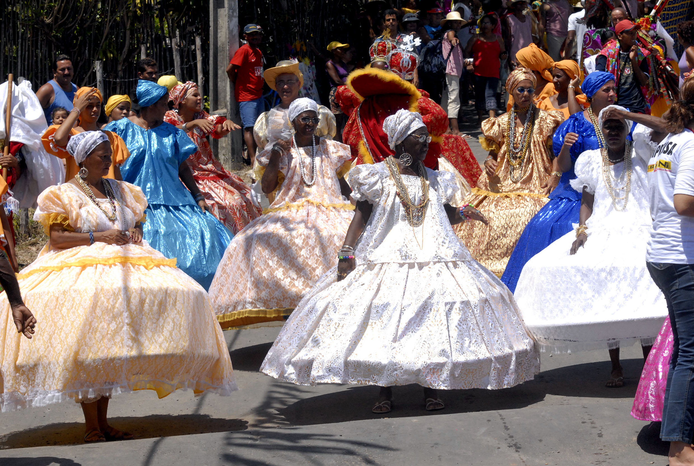

Extrativismo
15 unidades ativas
Nota Metodológica: O conjunto de dados apresentado é ilustrativo e serve apenas para validação das funcionalidades da plataforma.
15 unidades ativas
8 núcleos mapeados
3 eventos no cronograma
| Unidade Comunitária | Classificação | Responsável Técnico | Foco Produtivo | Status | Última Auditoria |
|---|---|---|---|---|---|
| Quilombo Boa Vista | Agricultura Familiar | João Batista | Mandioca e Hortaliças | Operacional | 10/10/2023 |
| Comunidade São Pedro | Artesanato | Ana Maria | Cerâmica Tapajônica | Operacional | 12/10/2023 |
| Quilombo do Carmo | Cultura | Mestre Tião | Festa do Marambiré | Em planejamento | 14/10/2023 |
| Associação Rio Claro | Agricultura Familiar | Raimundo Silva | Processamento de Farinha | Operacional | 15/10/2023 |
| Comunidade Santa Luzia | Capacitação | Prof. Helena | Oficina de Saberes Tradicionais | Concluído | 18/10/2023 |

Registro de evento cultural comunitário mantido na base de dados.